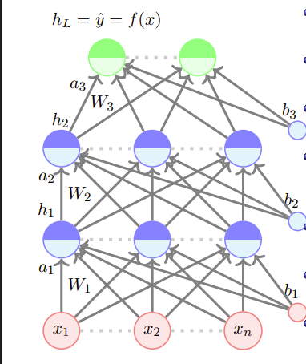
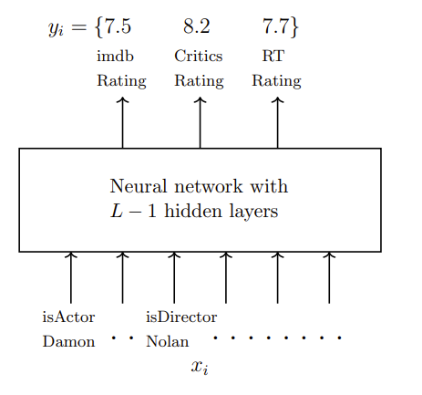
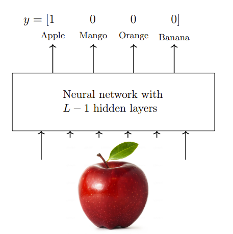
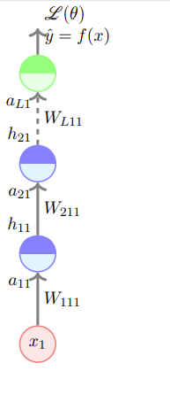

前馈神经网络
约 4989 个字 4 张图片 预计阅读时间 17 分钟
Reference
- https://www.cse.iitm.ac.in/~miteshk/CS7015/Slides/Handout/Lecture4.pdf
1 前馈神经网络（又名神经元多层网络）

前馈神经网络计算过程
第 \(i\) 层的激活前值为：
\[
a_{i}(x)=b_{i}+W_{i} h_{i-1}(x)
\]
第 \(i\) 层的激活值为：
\[
h_{i}(x)=g\left(a_{i}(x)\right)
\]
其中 \(g\) 被称为激活函数（例如，逻辑函数、tanh函数、线性函数等）.
输出层的激活值为：
\[
f(x)=h_{L}(x)=O\left(a_{L}(x)\right)
\]
其中 \(O\) 是输出激活函数（例如，softmax函数、线性函数等）.
为简化符号，我们将\(a_{i}(x)\)简记为\(a_{i}\)，将\(h_{i}(x)\)简记为\(h_{i}\).
前馈神经网络的模型构成
数据： \(\{x_{i}, y_{i}\}_{i = 1}^{N}\)
模型：
\[
\hat{y}_{i}=f\left(x_{i}\right)=O\left(W_{3} g\left(W_{2} g\left(W_{1} x+b_{1}\right)+b_{2}\right)+b_{3}\right)
\]
参数：
\[
\theta = W_{1}, \cdots, W_{L}, b_{1}, b_{2}, \cdots, b_{L}(L = 3)
\]
算法：带有反向传播的梯度下降法（我们很快会讲到）
目标/损失/误差函数：例如，
\[
min \frac{1}{N} \sum_{i=1}^{N} \sum_{j=1}^{k}\left(\hat{y}_{i j}-y_{i j}\right)^{2}
\]
一般来说，是 \(min \mathscr{L}(\theta)\)，其中 \(\mathscr{L}(\theta)\) 是参数的某个函数.
2 学习前馈神经网络的参数（直觉）
到目前为止，我们已经介绍了前馈神经网络.
现在我们想找到一种学习该模型参数的算法.
回顾梯度下降算法
算法1：梯度下降
- \(t \leftarrow 0\);
- \(\text{maxIterations} \leftarrow 1000\);
- \(\text{while } t < \text{maxIterations } \text{do}\)
- \(w_{t+1}\leftarrow w_{t}-\eta \nabla w_{t}\);
- \(b_{t+1}\leftarrow b_{t}-\eta \nabla b_{t}\)
- \(t \leftarrow t + 1\);
- \(\text{end}\)
前馈神经网络中的梯度下降
我们可以更简洁地将其写为：
算法1：梯度下降
- \(t \leftarrow 0\);
- \(\text{maxIterations} \leftarrow 1000\);
- \(\text{Initialize } \theta_0 = [w_0, b_0]\);
- \(\text{while } t < \text{maxIterations } \text{do}\)
- \(\theta_{t+1}\leftarrow \theta_{t}-\eta \nabla \theta_{t}\);
- \(t \leftarrow t + 1\);
- \(\text{end}\)
其中 \(\nabla \theta_{t}=[\frac{\partial \mathscr{L}(\theta)}{\partial w_{t}}, \frac{\partial \mathscr{L}(\theta)}{\partial b_{t}}]^{T}\) .
在这个前馈神经网络中，我们的 \(\theta\) 不是 \([w, b]\) ，而是 \([W_{1}, W_{2}, \cdots, W_{L}, b_{1}, b_{2}, \cdots, b_{L}]\). 我们仍然可以使用相同的算法来学习模型的参数.
前馈神经网络中梯度计算的挑战
不过，现在我们的 \(\nabla \theta\) 看起来要复杂得多：
\(\nabla \theta\) 由 \(\nabla W_{1}, \nabla W_{2}, \cdots \nabla W_{L - 1} \in \mathbb{R}^{n × n}, \nabla W_{L} \in \mathbb{R}^{n × k}, \nabla b_{1}, \nabla b_{2}, \cdots, \nabla b_{L - 1} \in \mathbb{R}^{n}\) 和 \(\nabla b_{L} \in \mathbb{R}^{k}\) 组成.
我们需要回答两个问题：
1. 如何选择损失函数 \(\mathscr{L}(\theta)\) ？
2. 如何计算由 \(\nabla W_{1}, \nabla W_{2}, \cdots, \nabla W_{L - 1} \in \mathbb{R}^{n × n}, \nabla W_{L} \in \mathbb{R}^{n × k}, \nabla b_{1}, \nabla b_{2}, \cdots, \nabla b_{L - 1} \in \mathbb{R}^{n}\) 和 \(\nabla b_{L} \in \mathbb{R}^{k}\) 组成的 \(\nabla \theta\) ？
3 输出函数和损失函数
我们需要回答两个问题：
1. 如何选择损失函数 \(\mathscr{L}(\theta)\) ？
2. 如何计算由 \(\nabla W_{1}, \nabla W_{2}, \cdots, \nabla W_{L - 1} \in \mathbb{R}^{n × n}, \nabla W_{L} \in \mathbb{R}^{n × k}, \nabla b_{1}, \nabla b_{2}, \cdots, \nabla b_{L - 1} \in \mathbb{R}^{n}\) 和 \(\nabla b_{L} \in \mathbb{R}^{k}\) 组成的 \(\nabla \theta\) ？
损失函数的选择
损失函数的选择取决于手头的问题. 我们通过两个例子来说明这一点. 再次考虑电影评分预测的例子，但这次我们关注预测评分.

这里 \(y_{i} \in \mathbb{R}^{3}\) .
损失函数应该衡量 \(\hat{y}_{i}\) 与 \(y_{i}\) 的偏差程度.
如果 \(y_{i} \in \mathbb{R}^{n}\) ，那么均方误差损失：
\[
\mathscr{L}(\theta)=\frac{1}{N} \sum_{i=1}^{N} \sum_{j=1}^{3}\left(\hat{y}_{i j}-y_{i j}\right)^{2}
\]
可以衡量这种偏差.
输出函数的选择
一个相关的问题是：如果 \(y_{i} \in \mathbb{R}\) ，输出函数“ \(O\) ”应该是什么？
更具体地说，它可以是逻辑函数吗？
不可以，因为逻辑函数将 \(\hat{y}_{i}\) 限制在0到1之间，而我们希望 \(\hat{y}_{i} \in \mathbb{R}\) .
所以，在这种情况下，将“ \(O\) ”设为线性函数更合理：
\[
f(x)=h_{L}=O\left(a_{L}\right)=W_{O} a_{L}+b_{O}
\]
此时 \(\hat{y}_{i}=f(x_{i})\) 不再局限于0到1之间.
分类问题中的损失函数和输出函数
现在考虑分类问题，对于这个问题，不同的损失函数可能更合适.
假设我们要将一张图像分类为\(k\)个类别之一.

同样，我们可以使用均方误差损失来衡量偏差，但你能想到更好的函数吗？
注意到\(y\)是一个概率分布，因此我们也应该确保 \(\hat{y}\) 是一个概率分布.
选择什么输出激活函数“ \(O\) ”能确保这一点呢？
\[
a_{L}=W_{L} h_{L - 1}+b_{L}\\
\hat{y}_{j}=O\left(a_{L}\right)_{j}=\frac{e^{a_{L, j}}}{\sum_{i = 1}^{k}e^{a_{L, i}}}
\]
\(O(a_{L})_{j}\) 是 \(\hat{y}\) 的第 \(j\) 个元素， \(a_{L, j}\) 是向量 \(a_{L}\) 的第 \(j\) 个元素. 这个函数被称为softmax函数.
现在我们确保了\(y\)和 \(\hat{y}\) 都是概率分布，能想到一个函数来衡量它们之间的差异吗？
交叉熵：
\[
\mathscr{L}(\theta)=-\sum_{c = 1}^{k}y_{c}\log\hat{y}_{c}
\]
注意到：
\[
y_{c}=
\begin{cases}
1, & \text{如果} c = \ell \text{（真实类别标签）}\\
0, & \text{否则}
\end{cases}
\]
所以 \(\mathscr{L}(\theta)=-\log\hat{y}_{\ell}\) .
分类问题的目标函数
对于分类问题（从\(k\)个类别中选择一个），我们使用以下目标函数：
\[
\underset{\theta}{\min}\ \mathscr{L}(\theta)=-\log\hat{y}_{\ell}
\]
或者
\[
\underset{\theta}{\max}\ -\mathscr{L}(\theta)=\log\hat{y}_{\ell}
\]
但是等等！ \(\hat{y}_{\ell}\) 是 \(\theta=[W_{1}, W_{2}, \cdots, W_{L}, b_{1}, b_{2}, \cdots, b_{L}]\) 的函数吗？
\[
\hat{y}_{\ell}=\left[O\left(W_{3} g\left(W_{2} g\left(W_{1} x+b_{1}\right)+b_{2}\right)+b_{3}\right)\right]_{\ell}
\]
是的，它确实是 \(\theta\) 的函数.
\(\hat{y}_{\ell}\) 编码了什么呢？它是\(x\)属于第 \(\ell\) 类的概率（让它尽可能接近1）.
\(\log\hat{y}_{\ell}\) 被称为数据的对数似然.
不同场景下的输出激活函数和损失函数
| 输出类型 |
实数值 |
概率值 |
| 输出激活函数 |
线性函数 |
softmax函数 |
| 损失函数 |
均方误差 |
交叉熵 |
当然，根据具体问题可能还有其他损失函数，但我们刚刚看到的这两种损失函数非常常见.
在本讲的剩余部分，我们将重点关注输出激活函数为softmax函数且损失函数为交叉熵的情况.
4 反向传播（直觉）
现在我们来看如何计算由 \(\nabla W_{1}, \nabla W_{2}, \cdots, \nabla W_{L - 1} \in \mathbb{R}^{n × n}, \nabla W_{L} \in \mathbb{R}^{n × k}, \nabla b_{1}, \nabla b_{2}, \cdots, \nabla b_{L - 1} \in \mathbb{R}^{n}\) 和 \(\nabla b_{L} \in \mathbb{R}^{k}\) 组成的 \(\nabla \theta\) ？
反向传播的直观理解
让我们关注这个权重 \((W_{111})\) .
为了使用随机梯度下降（SGD）学习这个权重，我们需要 \(\frac{\partial \mathscr{L}(\theta)}{\partial W_{111}}\) 的公式. 我们来看看如何计算它.
首先考虑一个简单的情况，即网络很深但很窄. 在这种情况下，通过链式法则很容易找到导数：
\[
\frac{\partial \mathscr{L}(\theta)}{\partial W_{111}}=\frac{\partial \mathscr{L}(\theta)}{\partial \hat{y}} \frac{\partial \hat{y}}{\partial a_{L 11}} \frac{\partial a_{L 11}}{\partial h_{21}} \frac{\partial h_{21}}{\partial a_{21}} \frac{\partial a_{21}}{\partial h_{11}} \frac{\partial h_{11}}{\partial a_{11}} \frac{\partial a_{11}}{\partial W_{111}}
\]
也可以简写成 \(\frac{\partial \mathscr{L}(\theta)}{\partial W_{111}}=\frac{\partial \mathscr{L}(\theta)}{\partial h_{11}} \frac{\partial h_{11}}{\partial W_{111}}\) . 类似地， \(\frac{\partial \mathscr{L}(\theta)}{\partial W_{211}}=\frac{\partial \mathscr{L}(\theta)}{\partial h_{21}} \frac{\partial h_{21}}{\partial W_{211}}\) ， \(\frac{\partial \mathscr{L}(\theta)}{\partial W_{L 11}}=\frac{\partial \mathscr{L}(\theta)}{\partial a_{L 1}} \frac{\partial a_{L 1}}{\partial W_{L 11}}\) .

在深入研究数学细节之前，让我们先直观地解释一下反向传播.
我们在输出端得到一定的损失，然后试图找出谁应该为这个损失负责.
所以，我们对输出层说：“嘿！你没有产生期望的输出，最好承担起责任. ”
输出层回应：“嗯，我为我的部分负责，但请理解，我的表现取决于下面的隐藏层和权重. ”毕竟……
\[
f(x)=\hat{y}=O\left(W_{L} h_{L - 1}+b_{L}\right)
\]
于是，我们与 \(W_{L}\) 、 \(b_{L}\) 和 \(h_{L}\) 交流，问它们：“你们怎么回事？”
\(W_{L}\) 和 \(b_{L}\) 承担全部责任，但 \(h_{L}\) 说：“请理解，我只取决于激活前层. ”
激活前层又说，它只取决于下面的隐藏层和权重.
我们以这种方式继续，意识到责任在于所有的权重和偏置（即模型的所有参数）.
但与其直接与它们交流，通过隐藏层和输出层与它们交流更容易（这正是链式法则允许我们做的）.
\[
\underbrace{\frac{\partial \mathscr{L}(\theta)}{\partial W_{111}}}_{\substack{Talk\ to\ the\\
weight\ directly}}=
\underbrace{\frac{\partial \mathscr{L}(\theta)}{\partial \hat{y}} \frac{\partial \hat{y}}{\partial a_{L 11}}}_{\substack{Talk\ to\
\ the\\ output\\ layer}} \underbrace{\frac{\partial a_{L 11}}{\partial h_{21}} \frac{\partial h_{21}}{\partial a_{21}}}_{\substack{Talk\ to\ the\\ previous\\ hidden\ layer}} \underbrace{\frac{\partial a_{21}}{\partial h_{11}} \frac{\partial h_{11}}{\partial a_{11}}}_{\substack{Talk\ to\ the\\ previous\\ hidden\ layer}} \underbrace{\frac{\partial a_{11}}{\partial W_{111}}}_{\substack{and\ now\ talk\\ to\ the\ weights}}
\]
反向传播中的关键量
我们关注的量（后续内容的路线图）：
1. 关于输出单元的梯度 \(\frac{\partial \mathscr{L}(\theta)}{\partial \hat{y}} \frac{\partial \hat{y}}{\partial a_{L 11}}\)
2. 关于隐藏单元的梯度 \(\frac{\partial a_{L 11}}{\partial h_{21}} \frac{\partial h_{21}}{\partial a_{21}}\frac{\partial a_{21}}{\partial h_{11}} \frac{\partial h_{11}}{\partial a_{11}}\)
3. 关于权重和偏置的梯度 \(\frac{\partial a_{11}}{\partial W_{111}}\)
我们的重点是交叉熵损失和softmax输出.
5 反向传播：计算关于输出单元的梯度
关于输出单元的梯度计算
首先考虑关于第 \(i\) 个输出的偏导数：
\[
\mathscr{L}(\theta)=-\log\hat{y}_{\ell} \quad (\ell = \text{真实类别标签})
\]
\[
\frac{\partial}{\partial \hat{y}_{i}}(\mathscr{L}(\theta))=
\begin{cases}
-\frac{1}{\hat{y}_{\ell}}, & \text{如果} i = \ell\\
0, & \text{否则}
\end{cases}
\]
更紧凑地表示为：
\[
\frac{\partial}{\partial \hat{y}_{i}}(\mathscr{L}(\theta))=-\frac{\mathbb{1}_{(i=\ell)}}{\hat{y}_{\ell}}
\]
现在我们可以讨论关于向量 \(\hat{y}\) 的梯度：
\[
\nabla_{\hat{y}} \mathscr{L}(\theta)=\begin{bmatrix}\frac{\partial \mathscr{L}(\theta)}{\partial \hat{y}_{1}}\\\vdots\\\frac{\partial \mathscr{L}(\theta)}{\partial \hat{y}_{k}}\end{bmatrix}=-\frac{1}{\hat{y}_{\ell}}\begin{bmatrix}\mathbb{1}_{\ell=1}\\\mathbb{1}_{\ell=2}\\\vdots\\\mathbb{1}_{\ell=k}\end{bmatrix}=-\frac{1}{\hat{y}_{\ell}} e_{\ell}
\]
其中 \(e(\ell)\) 是一个\(k\)维向量，其第 \(\ell\) 个元素为1，其他所有元素为0.
关于激活前向量\(a_{L}\)的梯度计算
我们真正感兴趣的是：
\[
\frac{\partial \mathscr{L}(\theta)}{\partial a_{L i}}=\frac{\partial(-\log\hat{y}_{\ell})}{\partial a_{L i}}=\frac{\partial(-\log\hat{y}_{\ell})}{\partial \hat{y}_{\ell}} \frac{\partial \hat{y}_{\ell}}{\partial a_{L i}}
\]
\(\hat{y}_{\ell}\) 依赖于 \(a_{L i}\) 吗？确实依赖.
\[
\hat{y}_{\ell}=\frac{\exp (a_{L \ell})}{\sum_{i}\exp (a_{L i})}
\]
确定这一点后，我们将推导出完整的表达式.
\[
\begin{align*}
\frac{\partial(-\log\hat{y}_{\ell})}{\partial a_{L i}} &= \frac{-1}{\hat{y}_\ell} \frac{\partial}{\partial a_{L i}} \hat{y}_\ell \\
&= \frac{-1}{\hat{y}_\ell} \frac{\partial}{\partial a_{L i}} \text{softmax}(\mathbf{a}_L)_\ell \\
&= \frac{-1}{\hat{y}_\ell} \frac{\partial}{\partial a_{L i}} \frac{\exp(\mathbf{a}_L)_\ell}{\sum_{i'} \exp(\mathbf{a}_L)_{i'}} \\
&= \frac{-1}{\hat{y}_\ell} \left(
\frac{\frac{\partial}{\partial a_{L i}} \exp(\mathbf{a}_L)_\ell}{\sum_{i'} \exp(\mathbf{a}_L)_{i'}} - \frac{\exp(\mathbf{a}_L)_\ell \left( \frac{\partial}{\partial a_{L i}} \sum_{i'} \exp(\mathbf{a}_L)_{i'} \right)}{\left( \sum_{i'} (\exp(\mathbf{a}_L)_{i'}) \right)^2}
\right) \\
&= \frac{-1}{\hat{y}_\ell} \left(
\frac{\mathbb{1}_{(\ell = i)} \exp(\mathbf{a}_L)_\ell}{\sum_{i'} \exp(\mathbf{a}_L)_{i'}} - \frac{\exp(\mathbf{a}_L)_\ell}{\sum_{i'} \exp(\mathbf{a}_L)_{i'}}
\frac{\exp(\mathbf{a}_L)_i}{\sum_{i'} \exp(\mathbf{a}_L)_{i'}}
\right) \\
&= \frac{-1}{\hat{y}_\ell} \left(
\mathbb{1}_{(\ell = i)} \text{softmax}(\mathbf{a}_L)_\ell - \text{softmax}(\mathbf{a}_L)_\ell \text{softmax}(\mathbf{a}_L)_i
\right) \\
&= \frac{-1}{\hat{y}_\ell} \left(
\mathbb{1}_{(\ell = i)} \hat{y}_\ell - \hat{y}_\ell \hat{y}_i
\right) \\
&= - \left( \mathbb{1}_{(\ell = i)} - \hat{y}_i \right)
\end{align*}
\]
到目前为止，我们已经推导出了关于 \(a_{L}\) 的第i个元素的偏导数.
\[
\frac{\partial \mathscr{L}(\theta)}{\partial a_{Li}}=-\left(\mathbb{1}_{\ell=i}-\hat{y}_{i}\right)
\]
现在我们可以写出关于向量 \(a_{L}\) 的梯度.
\[
\begin{aligned} \nabla_{a_{L}} \mathscr{L}(\theta)=\left[\begin{array}{c} \frac{\partial \mathscr{L}(\theta)}{\partial a_{L 1}} \\ \vdots \\ \frac{\partial \mathscr{L}(\theta)}{\partial a_{L k}} \end{array}\right]=\left[\begin{array}{c} -\left(\mathbb{1}_{\ell=1}-\hat{y}_{1}\right) \\ -\left(\mathbb{1}_{\ell=2}-\hat{y}_{2}\right) \\ \vdots \\ -\left(\mathbb{1}_{\ell=k}-\hat{y}_{k}\right) \end{array}\right] \\ =-(e(\ell)-\hat{y}) \end{aligned}
\]
6：反向传播：计算关于隐藏单元的梯度
沿多条路径的链式法则：如果函数 \(p(z)\) 可以写成中间结果 \(q_{i}(z)\) 的函数，那么我们有：
\[
\frac{\partial p(z)}{\partial z}=\sum_{m} \frac{\partial p(z)}{\partial q_{m}(z)} \frac{\partial q_{m}(z)}{\partial z}
\]
在我们的例子中：
- \(p(z)\) 是损失函数 \(\mathscr{L}(\theta)\)
- \(z = h_{ij}\)
- \(q_{m}(z)=a_{Lm}\)
\[
\begin{aligned} \frac{\partial \mathscr{L}(\theta)}{\partial h_{i j}} & =\sum_{m=1}^{k} \frac{\partial \mathscr{L}(\theta)}{\partial a_{i+1, m}} \frac{\partial a_{i+1, m}}{\partial h_{i j}} \\ & =\sum_{m=1}^{k} \frac{\partial \mathscr{L}(\theta)}{\partial a_{i+1, m}} W_{i+1, m, j} \end{aligned}
\]
现在考虑这两个向量：
\[
\nabla_{a_{i+1}} \mathscr{L}(\theta)=\left[\begin{array}{c}\frac{\partial \mathscr{L}(\theta)}{\partial a_{i+1,1}} \\ \vdots \\ \frac{\partial \mathscr{L}(\theta)}{\partial a_{i+1, k}}\end{array}\right] ; W_{i+1, \cdot, j}=\left[\begin{array}{c}W_{i+1,1, j} \\ \vdots \\ W_{i+1, k, j}\end{array}\right]
\]
\(W_{i + 1,\cdot,j}\) 是 \(W_{i + 1}\) 的第j列；可以看到：
\[
\left(W_{i+1, \cdot, j}\right)^{T} \nabla_{a_{i+1}} \mathscr{L}(\theta)=\sum_{m=1}^{k} \frac{\partial \mathscr{L}(\theta)}{\partial a_{i+1, m}} W_{i+1, m, j}
\]
\[
a_{i+1}=W_{i+1} h_{i j}+b_{i+1}
\]
我们有：
\[
\frac{\partial \mathscr{L}(\theta)}{\partial h_{i j}}=\left(W_{i+1, ., j}\right)^{T} \nabla_{a_{i+1}} \mathscr{L}(\theta)
\]
现在我们可以写出关于 \(h_{i}\) 的梯度：
\[
\begin{aligned} \nabla_{h_{i}} \mathscr{L}(\theta) & =\left[\begin{array}{c} \frac{\partial \mathscr{L}(\theta)}{\partial h_{i 1}} \\ \frac{\partial \mathscr{L}(\theta)}{\partial h_{i 2}} \\ \vdots \\ \frac{\partial \mathscr{L}(\theta)}{\partial h_{i n}} \end{array}\right]=\left[\begin{array}{c} \left(W_{i+1, \cdot, 1}\right)^{T} \nabla_{a_{i+1}} \mathscr{L}(\theta) \\ \left(W_{i+1, \cdot, 2}\right)^{T} \nabla_{a_{i+1}} \mathscr{L}(\theta) \\ \vdots \\ \left(W_{i+1, \cdot, n}\right)^{T} \nabla_{a_{i+1}} \mathscr{L}(\theta) \end{array}\right] \\ & =\left(W_{i+1}\right)^{T}\left(\nabla_{a_{i+1}} \mathscr{L}(\theta)\right) \end{aligned}
\]
我们几乎完成了，只是我们不知道如何计算 \(i<L - 1\) 时的 \(\nabla_{a_{i+1}} \mathscr{L}(\theta)\) . 我们将看看如何计算它.
\[
\begin{align*}
\nabla_{a_{i}} \mathscr{L}(\theta)&=\left[\begin{array}{c}\frac{\partial \mathscr{L}(\theta)}{\partial a_{i 1}} \\ \vdots \\ \frac{\partial \mathscr{L}(\theta)}{\partial a_{i n}}\end{array}\right]\\
\frac{\partial \mathscr{L}(\theta)}{\partial a_{i j}} & =\frac{\partial \mathscr{L}(\theta)}{\partial h_{i j}} \frac{\partial h_{i j}}{\partial a_{i j}} \\ & =\frac{\partial \mathscr{L}(\theta)}{\partial h_{i j}} g'\left(a_{i j}\right) \quad\left[\because h_{i j}=g\left(a_{i j}\right)\right]\\
\nabla_{a_{i}} \mathscr{L}(\theta) & =\left[\begin{array}{c} \frac{\partial \mathscr{L}(\theta)}{\partial h_{i 1}} g'\left(a_{i 1}\right) \\ \vdots \\ \frac{\partial \mathscr{L}(\theta)}{\partial h_{i n}} g'\left(a_{i n}\right) \end{array}\right] \\ & =\nabla_{h_{i}} \mathscr{L}(\theta) \odot\left[..., g'\left(a_{i k}\right), ...\right]
\end{align*}
\]
7 反向传播：计算关于参数的梯度
回顾一下：
\[
a_{k}=b_{k}+W_{k} h_{k-1}
\]
\[
\frac{\partial a_{k i}}{\partial W_{k i j}}=h_{k-1, j}
\]
\[
\begin{aligned} \frac{\partial \mathscr{L}(\theta)}{\partial W_{k i j}} & =\frac{\partial \mathscr{L}(\theta)}{\partial a_{k i}} \frac{\partial a_{k i}}{\partial W_{k i j}} \\ & =\frac{\partial \mathscr{L}(\theta)}{\partial a_{k i}} h_{k-1, j} \end{aligned}
\]
\[
\nabla_{W_{k}} \mathscr{L}(\theta)=\left[\begin{array}{ccccc}\frac{\partial \mathscr{L}(\theta)}{\partial W_{k 11}} & \frac{\partial \mathscr{L}(\theta)}{\partial W_{k12}} & \cdots & \cdots & \frac{\partial \mathscr{L}(\theta)}{\partial W_{k 1 n}} \\ \cdots & \cdots & \cdots & \cdots & \cdots \\
\vdots & \vdots & \vdots & \vdots & \vdots \\
\cdots & \cdots & \cdots & \cdots & \frac{\partial \mathscr{L}(\theta )}{\partial W_{k n n}}\end{array}\right]
\]
让我们以一个 \(W_{k} \in \mathbb{R}^{3×3}\) 的简单例子，来看看每一项是什么样的.
\[
\nabla_{W_{k}}\mathscr{L}(\theta)=\begin{bmatrix}\frac{\partial \mathscr{L}(\theta)}{\partial W_{k11}}&\frac{\partial \mathscr{L}(\theta)}{\partial W_{k12}}&\frac{\partial \mathscr{L}(\theta)}{\partial W_{k13}}\\&\ &\\\frac{\partial \mathscr{L}(\theta)}{\partial W_{k21}}&\frac{\partial \mathscr{L}(\theta)}{\partial W_{k22}}&\frac{\partial \mathscr{L}(\theta)}{\partial W_{k23}}\\&\ &\\\frac{\partial \mathscr{L}(\theta)}{\partial W_{k31}}&\frac{\partial \mathscr{L}(\theta)}{\partial W_{k32}}& \frac{\partial \mathscr{L}(\theta)}{\partial W_{k33}}\end{bmatrix}
\]
\[
\nabla_{W_{k}}\mathscr{L}(\theta)=\begin{bmatrix}\frac{\partial \mathscr{L}(\theta)}{\partial a_{k1}}h_{k - 1,1}&\frac{\partial \mathscr{L}(\theta)}{\partial a_{k1}}h_{k - 1,2}&\frac{\partial \mathscr{L}(\theta)}{\partial a_{k1}}h_{k - 1,3}\\\frac{\partial \mathscr{L}(\theta)}{\partial a_{k2}}h_{k - 1,1}&\frac{\partial \mathscr{L}(\theta)}{\partial a_{k2}}h_{k - 1,2}&\frac{\partial \mathscr{L}(\theta)}{\partial a_{k2}}h_{k - 1,3}\\\frac{\partial \mathscr{L}(\theta)}{\partial a_{k3}}h_{k - 1,1}&\frac{\partial \mathscr{L}(\theta)}{\partial a_{k3}}h_{k - 1,2}&\frac{\partial \mathscr{L}(\theta)}{\partial a_{k3}}h_{k - 1,3}\end{bmatrix}=\nabla_{a_{k}}\mathscr{L}(\theta)\cdot h_{k - 1}^{T}
\]
最后，来看偏置项.
\[
a_{ki}=b_{ki}+\sum_{j}W_{kij}h_{k - 1,j}
\]
\[
\begin{align*}\frac{\partial \mathscr{L}(\theta)}{\partial b_{ki}}&=\frac{\partial \mathscr{L}(\theta)}{\partial a_{ki}}\frac{\partial a_{ki}}{\partial b_{ki}}\\&=\frac{\partial \mathscr{L}(\theta)}{\partial a_{ki}}\end{align*}
\]
现在我们可以写出关于向量\(b_{k}\)的梯度.
\[
\nabla_{b_{k}}\mathscr{L}(\theta)=\begin{bmatrix}\frac{\partial \mathscr{L}(\theta)}{a_{k1}}\\\frac{\partial \mathscr{L}(\theta)}{a_{k2}}\\\vdots\\\frac{\partial \mathscr{L}(\theta)}{a_{kn}}\end{bmatrix}=\nabla_{a_{k}}\mathscr{L}(\theta)
\]
8 伪代码
最后，我们掌握了所有关键部分：\(\nabla_{a_{L}}\mathscr{L}(\theta)\)（关于输出层的梯度）、\(\nabla_{h_{k}}\mathscr{L}(\theta)\)、\(\nabla_{a_{k}}\mathscr{L}(\theta)\)（关于隐藏层的梯度，\(1\leq k<L\)）、\(\nabla_{W_{k}}\mathscr{L}(\theta)\)、\(\nabla_{b_{k}}\mathscr{L}(\theta)\)（关于权重和偏置的梯度，\(1\leq k\leq L\) ）. 现在我们可以写出完整的学习算法.
算法：\(\text{gradient_descent()}\)
- \(t \leftarrow 0\);
- \(\text{maxIterations} \leftarrow 1000\);
- 初始化 \(\theta_0 = [W_{1}^0, ..., W_{L}^0, b_1^0, ..., b_L^0 ]\);
- \(\text{while } t < \text{maxIterations do}\)
- \(h_1, h_2, ..., h_{L-1}, a_1, a_2, ..., a_L, \hat{y} = \text{forward\_propagation}(\theta_t)\);
- \(\nabla \theta_t\) = \(\text{back\_propagation}(h_1, h_2, ..., h_{L-1}, a_1, a_2, ..., a_L, y, \hat{y})\);
- \(\theta_{t+1} \leftarrow \theta_t - \eta \nabla \theta_t\);
- \(t\leftarrow t+1;\)
- \(\text{end}\)
算法: \(\text{forward_propagation}(\theta)\)
- \(\text{for} k = 1 \text{to} L - 1 \text{do}\)
- \(a_k = b_k + W_kh_{k-1}\);
- \(h_k = g(a_k)\);
- \(\text{end}\)
- \(a_L = b_L + W_Lh_{L-1}\);
- \(\hat{y} = O(a_L)\);
就是进行一次前向传播，并计算所有的\(h_{i}\)、\(a_{i}\) 和\(\hat{y}\).
算法：\(\text{back_propagation}(h_1, h_2, ..., h_{L-1}, a_1, a_2, ..., a_L, y, \hat{y})\)
- \(\nabla_{a_L} \mathscr{L}(\theta) = -(e(y) - \hat{y})\); // 计算输出梯度
- \(\text{for } k = L \text{ to } 1 \text{ do}\)
- \(\nabla_{W_k} \mathscr{L}(\theta) = \nabla_{a_k}\mathscr{L}(\theta)h_{k-1}^T\); // 计算关于参数的梯度;
- \(\nabla_{b_k} \mathscr{L}(\theta) = \nabla_{a_k}\mathscr{L}(\theta)\);
// 计算关于下一层的梯度;
- \(\nabla_{h_{k-1}}\mathscr{L}(\theta) = W_k^T(\nabla_{a_k}\mathscr{L}(\theta))\) ;
// 计算关于下一层（激活前）的梯度;
- \(\nabla_{a_{k-1}}\mathscr{L}(\theta) = \nabla h_{k-1}\mathscr{L}(\theta) \odot [..., g'(a_{k-1,j}),...]\);
- \(\text{end}\)
- \(\text{return } [\nabla_{W_{1}}, ..., \nabla_{W_{L}}, \nabla_{b_1}, ..., \nabla_{b_L} ]\)
9 激活函数的导数
现在，我们唯一需要弄清楚的就是如何计算\(g'\).
逻辑函数
\[
\begin{align*}g(z)&=\sigma(z)\\&=\frac{1}{1 + e^{-z}}\end{align*}\]
\[
\begin{align*}g'(z)&=(-1)\frac{1}{(1 + e^{-z})^{2}}\frac{d}{dz}(1 + e^{-z})\\&=(-1)\frac{1}{(1 + e^{-z})^{2}}(-e^{-z})\\&=\frac{1}{1 + e^{-z}}\left(\frac{1 + e^{-z}-1}{1 + e^{-z}}\right)\\&=g(z)(1 - g(z))\end{align*}
\]
双曲正切函数
\[
\begin{align*}g(z)&=\tanh(z)\\&=\frac{e^{z}-e^{-z}}{e^{z}+e^{-z}}\end{align*}
\]
\[
\begin{align*}g'(z)&=\frac{(e^{z}+e^{-z})\frac{d}{dz}(e^{z}-e^{-z})-(e^{z}-e^{-z})\frac{d}{dz}(e^{z}+e^{-z})}{(e^{z}+e^{-z})^{2}}\\&=\frac{(e^{z}+e^{-z})^{2}-(e^{z}-e^{-z})^{2}}{(e^{z}+e^{-z})^{2}}\\&=1-\frac{(e^{z}-e^{-z})^{2}}{(e^{z}+e^{-z})^{2}}\\&=1-(g(z))^{2}\end{align*}
\]
最后更新:
May 19, 2025 15:07:19
创建日期:
April 26, 2025 17:26:51